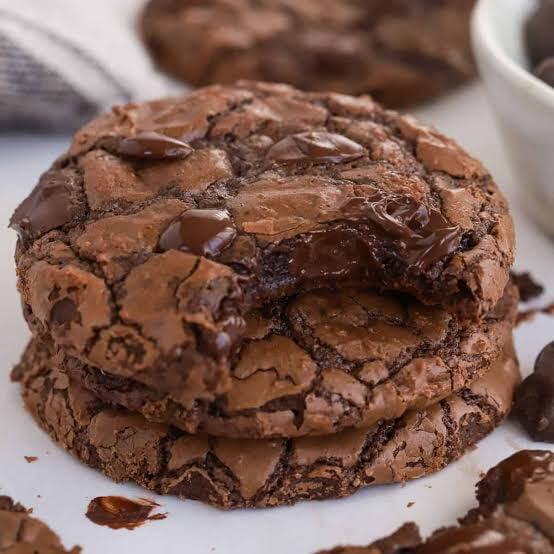

Straberry Cookies
Strawberry cookies bring a burst of fruity sweetness to the table.
Often made with fresh strawberries, strawberry extract, or freeze-dried
strawberry powder, these cookies have a distinct pink hue and a soft, tender
texture. The natural tartness of strawberries balances well with the cookie’s
sweetness, making them a refreshing and unique alternative to more traditional flavors.
Price:$73.7

Brownie Cookies
Brownie cookies merge the best of both worlds: the rich, dense, and chocolatey
taste of brownies with the crisp exterior of a cookie. These cookies are often soft
and chewy in the center with a slightly crunchy edge, giving them a texture that satisfies
both brownie and cookie lovers alike. They are packed with deep chocolate flavor, making them
a perfect indulgence for chocolate enthusiasts.
Price:$73.7

White Chocolate Cookies
White chocolate cookies are a luxurious twist on classic chocolate chip cookies.
Made with buttery dough and filled with creamy white chocolate chunks, these cookies
offer a rich, sweet flavor. The smoothness of white chocolate complements the cookie’s
soft or slightly crisp texture, creating a balanced and indulgent treat that is less intense
than dark chocolate but still deeply satisfying.
Price:$73.7
|
ORDER
|